Jezici specifični za domen
Jezičke sintakse i meta-modelovanje
Prof. dr Igor Dejanović (igord at uns ac rs)
Kreirano 2023-11-14 Tue 21:28, pritisni ESC za mapu, m za meni, Ctrl+Shift+F za pretragu
Sadržaj
1. Sintakse
1.1. Tehnike i tehnologije za implementaciju DSL-ova
- Parser generatori/interpreteri
- Meta-modelovanje
- Druge tehnike: ontologije, XML tehnologije…
1.2. Konkretna sintaksa
- Da bi mogram prikazali korisniku potrebna nam je konkretna sintaksa.
- Konkretna sintaksa definiše “izgled” iskaza na nekom jeziku, odnosno u širem smislu definiše i načine interakcije korisnika sa jezičkim iskazima tj. predstavlja interfejs jezik-korisnik.
- Iako nam je za jedan jezik dovoljna jedna konkretna sintaksa, možemo ih imati više.
- Konkretne sintakse mogu biti tekstualne, grafičke, tabelarne, tipa stabla, bazirane na dijalozima …
1.3. Primer istog iskaza upotrebom dve različite konkretne sintakse

1.4. Parsiranje - sintaksna analiza
- Analiza linearnog zapisa niza simbola na osnovu pravila neke formalne gramatike jezika.
- Transformacija ulaznog stringa u stablo parsiranja.
1.5. Stablo parsiranja
- Nastaje iz niske simbola (ulaznog stringa) procesom skeniranja (tokenizacije ili leksičke analize) i parsiranja.
- Listovi stabla su tokeni prepoznati od strane skenera dok je struktura stabla određena gramatikom jezika.
- Stablo parsiranja reflektuje sintaksnu strukturu ulaznog stringa na bazi unapred definisane formalne gramatike.
1.6. Stablo parsiranja - Primer
1.7. Apstraktna sintaksa
- Određuje pravila validnosti jezičkih iskaza sa stanovišta njegove strukture bez razmatranja konkretne reprezentacije iskaza (konkretne sintakse).
- Definiše strukture validnih rečenica sa stanovišta jezika.
- Sadrži koncepte domena, njihove osobine i međusobne relacije.
- Jezici za definisanje apstraktnih sintaksi jezika se u domenu modelovanja nazivaju meta-meta-modelima*.
1.8. Primer - apstraktna sintaksa jezika za opis konačnih automata
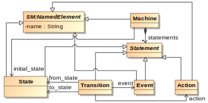
1.9. Primer - apstraktna sintaksa jezika za jednostavne algebarske izraze
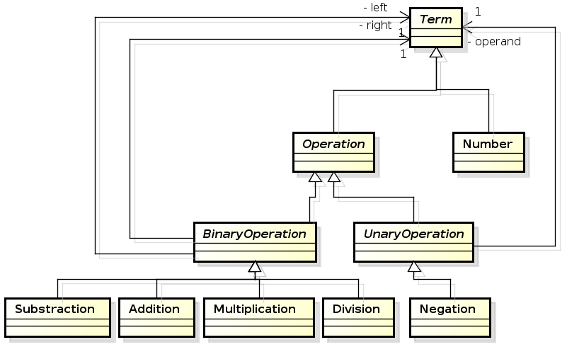
1.10. Apstraktno sintaksno stablo
- Svaki iskaz na datom jeziku se može na apstraktan način opisati apstraktnim sintaksnim stablom (Abstract Syntax Tree).
- AST je usmereno labelirano stablo gde čvorovi stabla predstavljaju instance koncepata apstraktne sintakse.
1.11. Primer apstraktnog sintaksnog stabla
1.12. Razlike između apstraktnog i konkretnog sintaksnog stabla
- Konkretno sintaksno stablo je bazirano na formalnoj gramatici koja opisuje detalje zapisa u tekstualnom obliku.
- Apstraktno sintaksno stablo sadrži suštinu jezičkog iskaza.
- Možemo imati više gramatika za isti jezik odnosno jedno apstraktno sintaksno stablo možemo zapisati na više različitih načina što rezultuje različitim konkretnim sintaksnim stablima.
- Primer: Izraz
-(4-1)*5/(2+4.67)možemo u postfiksnoj notaciji zapisati kao4 1 - 5 * 2 4.67 + / -. Ovo će rezultovati različitim stablima parsiranja ali je suština izraza ista i može rezultovati istim apstraktnim sintaksnim stablom.
2. Sekundarna notacija
2.1. Sekundarna notacija
- Iako konkretna sintaksa nameće svoja pravila, gotovo uvek postoji određena sloboda koja se ostavlja korisniku i koja omogućava da se mogram koji je isti sa stanoviša apstraktne sintakse (isto apstraktno sintaksno stablo) prezentuje na različite načine.
- Primeri:
- “Prazni” karakteri kod tekstualnih sintaksi (white-spaces) najčešće nemaju semantičkog značaja pa se mogu koristiti na različite načine (kod se može nazubljivati na više načina).
- Položaji, boja i veličine simbola kod grafičkih sintaksi najčešće nemaju semantičkog značenja pa korisnik može da iskoristi ove osobine da enkoduje neko svoje značenje.
2.2. Problemi sa sekundarnom notacijom
- Sekundarna notacija se može koristiti na proizvoljan način.
- Svaki korisnik razvija svoj stil upotrebe sekundarne notacije što može prouzrokovati pogrešno ili otežano tumačenje.

Da li su ova dva mograma ista?
2.3. Problemi sa sekundarnom notacijom
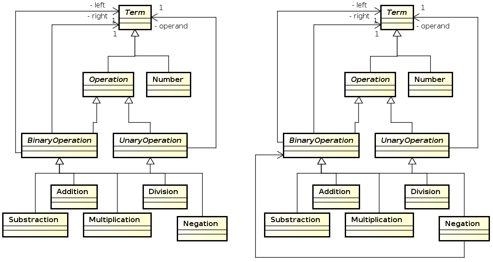
A sada?
2.4. Moguća rešenja
- Definisanje stila kodiranja - coding style (kod tekstualnih) koga se pridržavaju svi programeri. Potrebna je određena doza discipline.
- Smanjenje korisničke slobode - ugrađivanje mogućih elemenata sekundarne notacije u formalni jezik. Alati će sprečiti neispravnu upotrebu.
2.5. Primer - Python
- Python koristi identaciju koda za kontrolu toka programa.
- Jedan od razloga čitljivosti Python koda - svi programeri moraju ispravno da nazubljuju kod.
def inner_from_python(expression):
retval = None
if isinstance(expression, types.FunctionType):
# If this expression is a parser rule
rule_name = expression.__name__
if rule_name in __rule_cache:
c_rule = __rule_cache.get(rule_name)
if self.debug:
print("Rule {} founded in cache.".format(rule_name))
if isinstance(c_rule, CrossRef):
self.__cross_refs += 1
if self.debug:
print("CrossRef usage: {}"
.format(c_rule.target_rule_name))
return c_rule
...
2.6. Pristupi u realizaciji editora za DSL-ove
Projekcione radionice - direktna izmena apstraktne reprezentacije kroz projekciju.
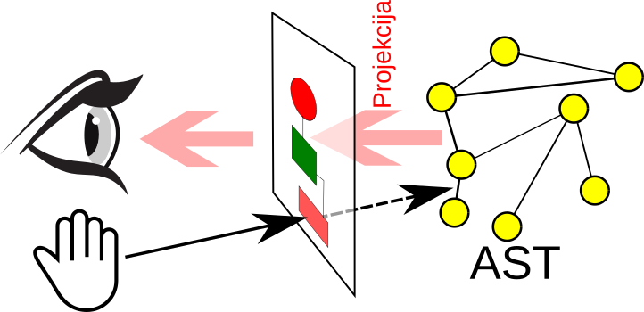
Bazirane na parserima - izmena se vrši posredno kroz tekst koji se parsira da bi se dobila apstraktna reprezentacija.
3. Meta-modelovanje
3.1. Model
- Modelovanje je esencijalno za ljudsku aktivnost jer svakoj akciji prethodi, eksplicitno ili implicitno, kreiranje modela.
- Modeli mogu biti deskriptivni, ukoliko modeluju postojeći realni sistem, ili preskriptivni (specifikacija) ukoliko predstavljaju plan sistema koji treba da se izgradi.
- Model predstavlja opis, ili specifikaciju sistema i njegovog okruženja kreiran za određenu namenu. Najčešće je model predstavljen kao kombinacija crteža i teksta. Tekst može biti zadat jezikom za modelovanje ili prirodnim jezikom*.
3.2. Model - drugi pokušaj
Model predstavlja pojednostavljenje sistema sa određenim ciljem. Model treba da odgovori na pitanja umesto stvarnog sistema. Odgovori dobijeni od modela moraju da budu isti kao i oni dobijeni od realnog sistema, pod uslovom da se pitanja nalaze u domenu definisanom ciljem modela. Da bi bio koristan, model mora biti jednostavniji za upotrebu od realnog sistema. Da bi se ovo postiglo, mnogi detalji realnog sistema su apstrahovani i izostavljeni. Ovo pojednostavljenje je srž modelovanja.
3.3. Osnovne karakteristike modela
- Model ne predstavljaju samo crteži i tekstualni opisi. Model može imati materijalnu formu npr. može biti model/maketa aviona, pojednostavljena verzija motora sa unutrašnjim sagorevanjem itd.
- Apstrakcija i namena, tj. skup pitanja na koje želimo da dobijemo odgovore, su osnovne karakteristike modela.
- U opštem slučaju, ne možemo očekivati da će model dati potpuno iste odgovore kao modelovani sistem ali možemo očekivati da razlike (greške) budu u projektovanim granicama.
3.4. Meta-model
- Kada kreiramo model sistema moramo poštovati određena pravila odnosno moramo koristiti određeni jezik za modelovanje.
- Jezik može biti opšte namene (npr. UML) ili specifičan za domen.
- Takav jezik predstavlja eksplicitnu specifikaciju korišćene apstrakcije pri modelovanju*.
- Apstraktna sintaksa datog jezika u svetu modelovanja je takođe predstavljena kao model. Ovakav model nazivamo meta-modelom.
- Meta-model sadrži koncepte domena, njihove međusobne veze i ograničenja.
3.5. Primer - meta-model jezika za opis konačnih automata
Apstraktna sintaksa je meta-model
3.6. Meta-metamodel
- Kreiranje jezika predstavlja domen sa svojim konceptima i pravilima.
- Jezik ovog domena (jezik za opis jezika) nazivamo meta-jezikom.
- Kao što apstraktnu sintaksu bilo kog jezika nazivamo meta-modelom, apstraknu sintaksu meta-jezika nazivamo meta-metamodelom.
- Meta-metamodelom možemo opisati apstraktnu sintaksu bilo kog jezika pa i meta-jezika. Stoga kažemo da je meta-metamodel samodefinišući.
3.7. Stek za metamodelovanje
3.8. Problemi sa stekom za metamodelovanje
Dva važna problema postoje kada je stek za metamodelovanje u pitanju:
- U kakvoj su vezi entiteti i koncepti realnog sveta sa modelima?
- Kako tumačiti dualnost veze instanciranja? Na primer, konkretan UML objekat
sa M1 nivoa je instanca konkretne UML klase sa M1 nivoa, ali je istovremeno i
instanca UML
Objectkoncepta sa M2 nivoa.
3.9. Moguća rešenja
- Prvi problem: poseban tretman M0 nivoa. M1→M0 – predstava (eng. representation ili representationOf). U obrnutom smeru M0→M1 (eng. representedBy). Elementi modela sa M1 nivoa predstavljaju entitete stvarnog sveta sa M0 nivoa.
- Drugi problem: veza između metanivoa – usklađenost (eng. conformantTo ili
conformsTo) li meta. Npr. konkretna UML klasa sa M1 nivoa u skladu sa UML
Classkonceptom M2 nivoa. - Veze između nivoa iznad M0 nazivamo lingvističko instanciranje za razliku od veza instanciranja unutar metanivoa koja su podržana jezikom opisanim višim metanivoom. Instanciranje unutar metanivoa nazivamo ontološkim instanciranjem.
3.10. Operacije koje koristimo pri (meta)modelovanju
- Apstrakcija
- Klasifikacija
- Generalizacija
3.11. Apstrakcija
- Jedno od osnovnih oruđa ljudskog intelekta.
- Proces zanemarivanja nebitnih informacija prilikom kreiranja modela.
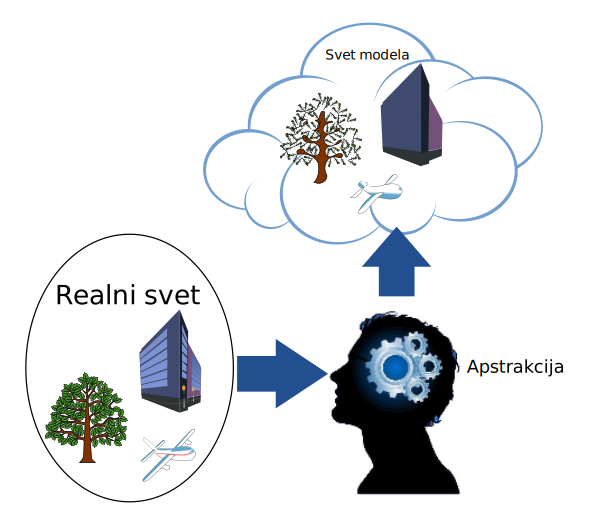
3.12. Apstrakcija
If you assume a certain basic knowledge in the audience, you can talk in a language that deals with bigger concepts, and express things in a much shorter and clearer way. This, more or less, is what abstraction is.
3.13. Apstrakcija i metanivoi
- Operacija apstrakcije se dešava na prelasku između nivoa M0 i M1.
- Veza između nivoa M0 (realni sistem) i M1 (model sistema): representationOf u smeru M1 → M0 ili representedBy u smeru M0 → M1.
- Klasične infrastrukture za metamodelovanje ne definišu u kakvoj su vezi objekti realnog sveta sa modelima.
- Na nivou M0, se kod klasičnog pristupa, posmatraju softverske reprezentacije objekata realnog sveta (npr, red u tabeli baze, objekat u memoriji itd.) dok se stvarni objekti kao što su ljudi, predmeti, događaji ne analiziraju eksplicitno.
3.14. Klasifikacija
- Objekti realnih sistema, kao i njihovi modeli, se mogu grupisati na osnovu zajedničkih osobina.
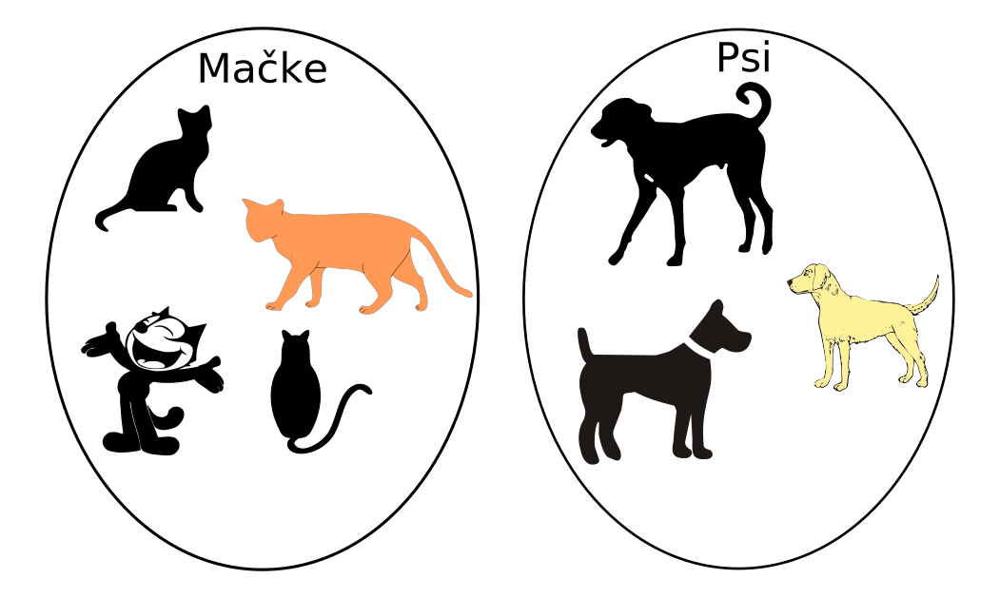
3.15. Klasifikacija i metanivoi
- Klasifikacija se može obavljati u okviru metanivoa ukoliko jezik to dopušta. Na primer, grupa određenih objekata UML objektnog dijagrama koja opisuje konkretne osobe sa imenom, prezimenom i drugim relevantnim informacijama definisanih apstrakcijom može biti klasifikovana i opisana UML klasom.
- Veza klasifikacije se može obavljati i između metanivoa, tako se veza
elemenata modela sa metaelementima može karakterisati kao veza klasifikacije.
Na primer sve klase dijagrama klasa, koji koristi UML metamodel, su u vezi sa
konceptom
ClassUML metamodela. U tom slučaju, klasifikacija je izvršena na osnovu osobinaClasskoncepta.
3.16. Token modeli i modeli tipova
- Prvi ih je definisao Čarls Sanders Pirs.
- Token modeli:
- Modeli konkretnih pojedinačnih pojava realnog sveta.
- Nastaju isključivo procesom apstrakcije.
- Primer: geografska mapa, maketa aviona…
- Modeli tipova:
- Nastaju procesom klasifikacije modela tokena na osnovu zajedničkih osobina.
- Ovakav model opisuje klasu pojava realnog sveta.
3.17. Generalizacija
- Predstavlja dalji proces klasifikacije modela tipova na osnovu zajedničkih osobina.
- Odvija se unutar modela tipova na taj način što se tipovi grupišu u apstraktne koncepte na osnovu zajedničkih osobina. Za tako kreirane koncepte kažemo da generalizuju posmatrani skup koncepata, odnosno posmatrani skup koncepata se nasleđuje iz generalizovanog koncepta.
3.18. Apstrakcija, klasifikacija i generalizacija
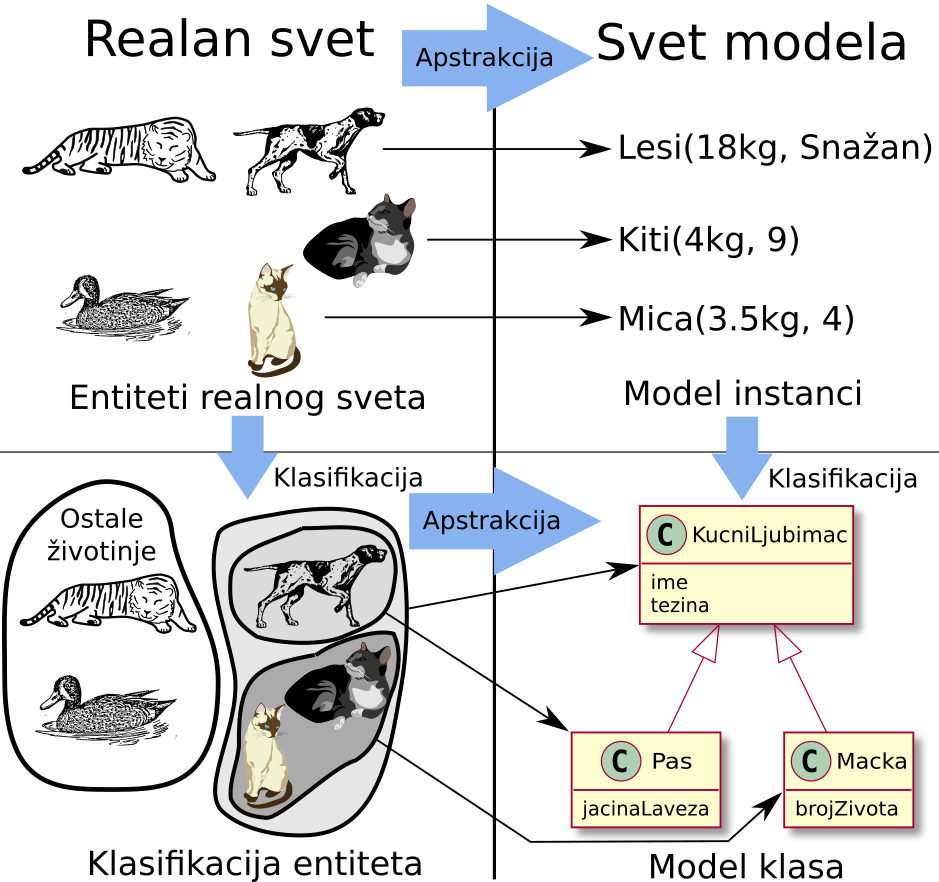
4. Meta-metamodeli
4.1. MOF
- MOF (Meta-Object Facility)1 je meta-metamodel i industrijski standard koji se razvija pod okriljem OMG (Object Management Group) konzorcijuma.
- Predstavlja osnovnu integracionu platformu MDA (Model-Driven Architecture) pravca i omogućava interoperabilnost UML baziranih alata.
- Nastao je na bazi UML-a i u MOF-u se danas opisuju OMG jezici za modelovanje, između ostalog i UML
- MOF je podeljen na EMOF (Essential MOF), CMOF(Complete MOF) i SMOF(Semantic MOF).
4.2. EMOF

4.3. ECore
- ECore je meta-metamodel čiji je razvoj započeo IBM a kasnije je razvijan u okviru Eclipse EMF (Eclipse Modeling Framework)1 projekta.
- Baziran na programskom jeziku Java. Pod licencom slobodnog softvera (Eclipse Public License).
- U osnovi predstavlja efikasnu implementaciju EMOF meta-metamodela.
- Industrijski standard, dokazan i testiran kroz višegodišnju upotrebu na realnim projektima.
4.4. ECore
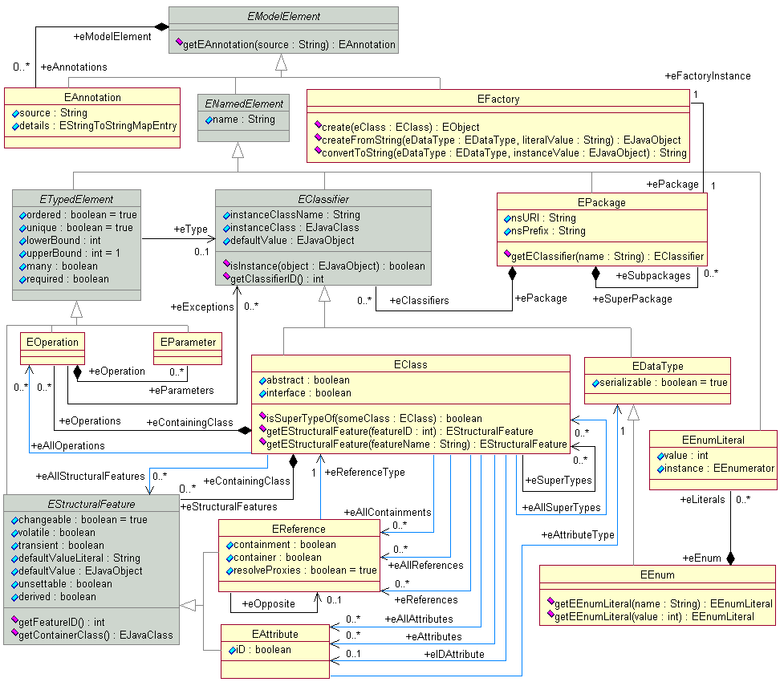
4.5. GOPPRR
- Ime predstavlja skraćenicu reči koje opisuju osnovne koncepte jezika: G raph, O bject, P roperty, P ort, R ole, R elationship.
- Vlasnički softver. Okosnica MetaEdit+ alata1. Nastao je od ranijih verzija koje su nosile naziv GOPRR i OPRR2.
4.6. MoRP
- Razvijen na Katedri za informatiku.
- Jednostavan - mali broj koncepata.
- Implementacija u Javi1. U toku port na Python2 (čim se nađe vremena ;) ).
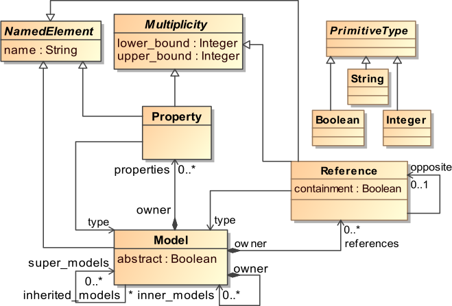
5. Primer usklađenosti kroz metanivoe
5.1. Primer - Mogram, jezik, meta-jezik
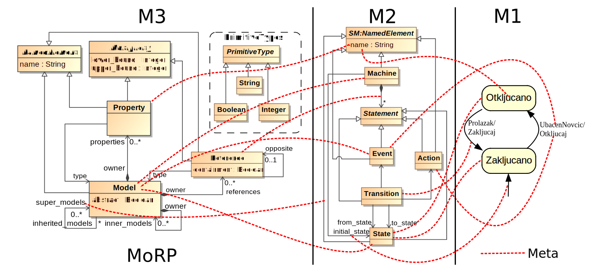
6. Analiza i modelovanje domena
6.1. Analiza domena
- Problem u komunikaciji:
- Domenski eksperti pričaju određenim jezikom. Programeri su takođe domenski eksperti za izradu softvera i imaju svoj jezik.
- Neko iz tima mora postati bilingvalan u cilju prevođenja iskaza između dva tima.
- Jezik nije formalizovan i vremenom dolazi do fragmentacije značenja. Različiti članovi tima ili podtimovi izmaju različita tumačenja određenih termina.
- Analiza domena - timska, iterativna aktivnost. Analitičar kroz razgovor sa domenskim ekspertima i čitanjem dokumentacije kreira domenski model.
6.2. Sveprisutni jezik
- Domenski model, tj. metamodel, predstavlja srž znanja o domenu i osnovu komunikacije svih učesnika na projektu.
- Sveprisutni jezik (Ubiquitous Language) ima jasno definisanu semantiku čime se izbegava proizvoljno tumačenje.
- Vremenom svi članovi tima usvajaju novi rečnik pojmova koji direktno proizilazi iz domenskog modela čime se omogućava bolje razumevanje i otklanjaju se teškoće u komunikaciji.
6.3. Primer - JSD za elektroniku
Uzmimo za primer da je potrebno kreirati metamodel za oblast elektronike. Cilj nam je kreiranje softvera za crtanje električnih šema. U razgovoru sa domenskim ekspertima čujemo sledeće iskaze:
Električna šema se sastoji od električnih komponenti koje poseduju terminale. Terminali se spajaju konekcijama. Svaka šema, komponenta, terminal i konekcija imaju naziv i opis.
6.4. Prva iteracija
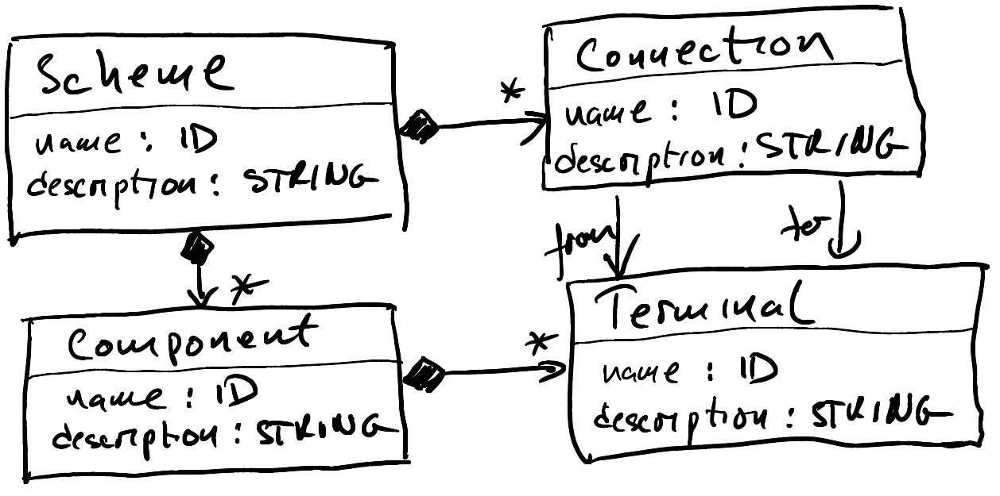
6.5. Konkretni modeli
U toku analize koristimo konkretne primere modela da bi bolje razumeli domen.
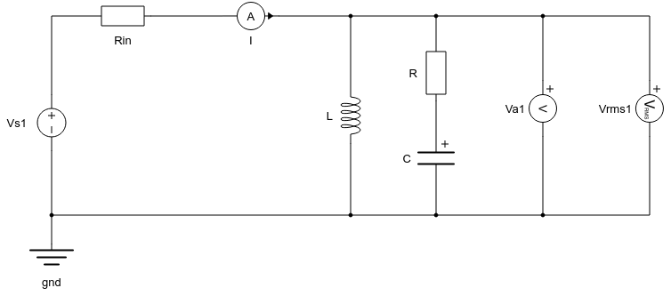
6.6. Druga iteracija
Dalji tok razgovora može ići u pravcu profinjenja modela, odnosno definisanja detalja. Iskazi bi mogli biti, na primer:
Komponente imaju osobine koje su definisane nazivom i vrednošću. Tip osobine određuje GUI komponentu za unos vrednosti, podrazumevanu vrednost, jedinicu mere, minimalnu i maksimalnu dopuštenu vrednost.
Komponente su takođe određenog tipa. Sve komponente istog tipa imaju istu ikonu, opis, tipove osobina i terminala. Tipovi terminala definišu dodatno i poziciju terminala na tipu komponente.
6.7. Druga iteracija - skica
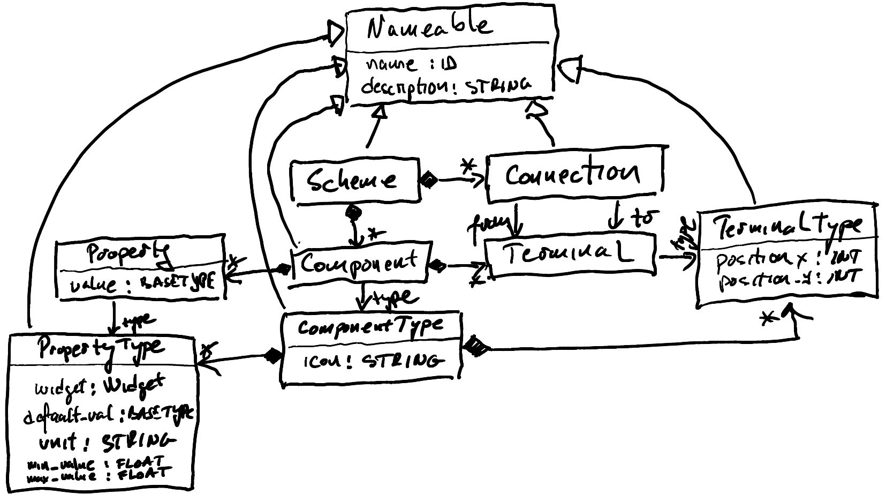
6.8. Finalni model
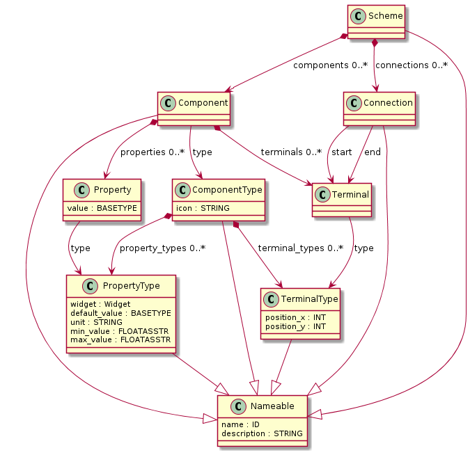
7. Jezici, programi i domeni
7.1. Programi i jezici
- Neka je \(P\) skup svih mogućih programa gde je \(p \in P\) program.
- Neka je \(L\) skup svih mogućih programskih jezika gde je \(l \in L\) konkretan jezik.
- Jezici definišu potrebnu strukturu i notaciju za enkodovanje programa.
- Ako \(p\) možemo enkodovati na jeziku \(L\) označavamo ga sa \(p_l\).
- Algoritam npr. quick sort možemo enkodovati na različitim jezicima, npr. Python i Java. Odnosno možemo imati konkretne predstave \(p_{l_1}\) i \(p_{l_2}\) na jezicima \(l_1\) i \(l_2\).
7.2. Pogodnost jezika
- Funkcionalno isti programi enkodovani na različitim jezicima imaju različite nefunkcionalne karakteristike (brzina, zauzeće memorije itd.).
- Jezici su pogodni za različite primene. Npr JavaScript za veb razvoj, Go za konkurentne programe itd.
7.3. Transformacije programa
Program možemo transformisati sa jednog jezika na drugi. Na primer
\(p_{l_1} \overset{T}{\rightarrow} p_{l_2}\)
Transformacija \(T\) prevodi program sa jezika \(l_1\) na jezik \(l_2\). Npr. Legacy Modernization.
Možemo transformisati program unutar istog jezika uz očuvanje funkcionalnih karakteristika.
\({p_1}_{l} \overset{T_{refc}}{\rightarrow} {p_2}_{l}\)
Transformaciju \(T_{refc}\) nazivamo refaktorisanje.
7.4. Definisanje domena upotrebom jezika
Ako je jezik \(l\) specifičan za domen tada se domen može definisati kao skup svih programa na datom jeziku, u oznaci \(P_l\).
\(P_l \subset P\)
Ali ova definicija nije preterano korisna
7.5. Definisanje domena - induktivni pristup
- Od dna ka vrhu - eng. bottom-up.
- Definišemo domen putem softvera koji se već koristi u domenu.
- Ukoliko posmatramo programe na istom jeziku lakše ćemo uočiti određene API-je, idiome i konstrukcije koje se u domenu koriste.
7.6. Definisanje domena - deduktivni pristup
- Od vrha ka dnu - eng. top-down.
- Posmatramo korpus znanja o datom domenu i obavljamo analizu.
- \(P_D \subset P\) je skup programa koji su interesantni u domenu \(D\).
- Teži pristup jer je potrebno razumeti prirodu domena \(D\).
7.7. Definisanje domena - preklapanje skupova
- \(P_D \subset P\) je skup svih programa domena \(D\)
- Ovaj skup je moguće iskazati na više jezika. Npr. Ukoliko posmatramo \(P_l \subset P\) tj. skup svih programa na jeziku \(l\) on će delimično poklopiti \(P_D\).
- Za dobar JSD \(l\) će važiti da \(P_l \simeq P_D\).
7.8. Definicija
Jezik specifičan za neki domen \(D\) (u oznaci \(l_D\)) predstavlja jezik koji je specijalizovan i optimizovan za enkodovanje programa iz skupa \(P_D\). Možemo reći da je \(l_D\) efikasniji u reprezentaciji programa iz \(P_D\) od drugih jezika. Ova efikasnost se postiže upotrebom apstrakcija koje su prilagođene domenu i izostavljanjem nepotrebnih detalja koji su nebitni za \(D\).
7.9. Nadaproksimacija i podaproksimacija
- Pokrivenost domena:
- Ako \(P_l\) može enkodovati sve programe iz \(P_D\) ali i još neke => nadaproksimacija (\(P_ln\))
- Ako \(P_l\) može enkodovati samo programe iz \(P_D\) ali ne sve => podaproksimacija (\(P_lp\))
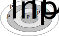
- Nadaproksimacija - moguće definisati programe van \(P_D\) ali jezik nije u tome efikasan.
- Podaproksimacija - postoje programi koji su u \(P_D\) ali ih jezikom nije moguće opisati. Obično se u praksi u tom slučaju koristi JON za dopunu funkcionalnosti.
7.10. Hijerarhija domena
- Domeni se mogu organizovati u hijerarhije - domeni višeg nivoa čine podskup domena nižeg nivoa u smislu opsega, odnosno domeni višeg nivoa specijalizuju domene nižeg nivoa.
- Ovaj pristup omogućava bolju organizaciju i ponovnu iskoristivost (eng. reusability).
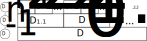
- \(D_0\) - domen svih mogućih programa => \(P_{D_0} \equiv P\) - domen JON jezika.
8. Literatura
- Igor Dejanović, Jezici specifični za domen, Fakultet tehničkih nauka, Novi Sad, 2021. (dostupno u skriptarnici FTN-a)
- M. Völter, DSL Engineering: Designing, Implementing and Using Domain-Specific Languages. 2013.